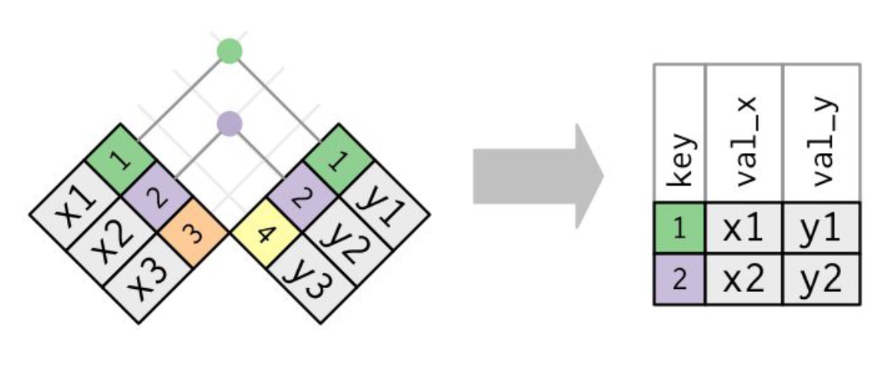
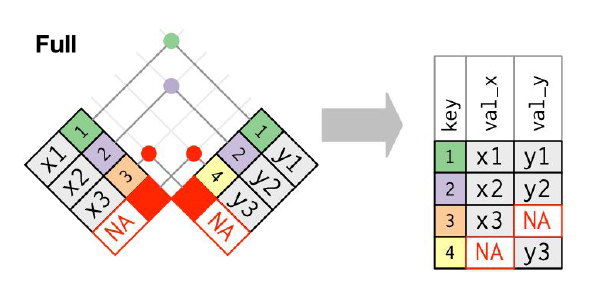
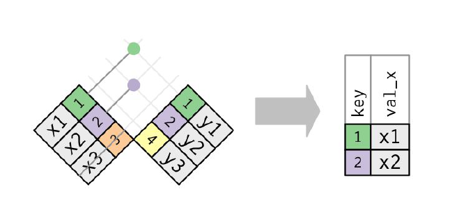

Visualizing Relational Data
introduction
It’s rare that a data analysis involves only a single table of data. Typically you have many tables of data, and you must combine them to answer the questions that you’re interested in. Collectively, multiple tables of data are called relational data because it is the relations, not just the individual datasets, that are important.
To work with relational data you need verbs that work with pairs of tables. There are two most common families of verbs designed to work with relational data:
-
Mutating joins, which add new variables to one data frame from matching observations in another.
-
Filtering joins, which filter observations from one data frame based on whether or not they match an observation in the other table.
Prerequisites
library(tidyverse)
library(nycflights13)
nycflights13
airlines lets you look up the full carrier name from its abbreviated code:
head(airlines)
## # A tibble: 6 × 2
## carrier name
## <chr> <chr>
## 1 9E Endeavor Air Inc.
## 2 AA American Airlines Inc.
## 3 AS Alaska Airlines Inc.
## 4 B6 JetBlue Airways
## 5 DL Delta Air Lines Inc.
## 6 EV ExpressJet Airlines Inc.
airports gives information about each airport, identified by the faa airport code:
airports
## # A tibble: 1,458 × 8
## faa name lat lon alt tz dst tzone
## <chr> <chr> <dbl> <dbl> <dbl> <dbl> <chr> <chr>
## 1 04G Lansdowne Airport 41.1 -80.6 1044 -5 A America/…
## 2 06A Moton Field Municipal Airport 32.5 -85.7 264 -6 A America/…
## 3 06C Schaumburg Regional 42.0 -88.1 801 -6 A America/…
## 4 06N Randall Airport 41.4 -74.4 523 -5 A America/…
## 5 09J Jekyll Island Airport 31.1 -81.4 11 -5 A America/…
## 6 0A9 Elizabethton Municipal Airport 36.4 -82.2 1593 -5 A America/…
## 7 0G6 Williams County Airport 41.5 -84.5 730 -5 A America/…
## 8 0G7 Finger Lakes Regional Airport 42.9 -76.8 492 -5 A America/…
## 9 0P2 Shoestring Aviation Airfield 39.8 -76.6 1000 -5 U America/…
## 10 0S9 Jefferson County Intl 48.1 -123. 108 -8 A America/…
## # … with 1,448 more rows
planes gives information about each plane, identified by its tailnum:
planes
## # A tibble: 3,322 × 9
## tailnum year type manufacturer model engines seats speed engine
## <chr> <int> <chr> <chr> <chr> <int> <int> <int> <chr>
## 1 N10156 2004 Fixed wing multi… EMBRAER EMB-… 2 55 NA Turbo…
## 2 N102UW 1998 Fixed wing multi… AIRBUS INDU… A320… 2 182 NA Turbo…
## 3 N103US 1999 Fixed wing multi… AIRBUS INDU… A320… 2 182 NA Turbo…
## 4 N104UW 1999 Fixed wing multi… AIRBUS INDU… A320… 2 182 NA Turbo…
## 5 N10575 2002 Fixed wing multi… EMBRAER EMB-… 2 55 NA Turbo…
## 6 N105UW 1999 Fixed wing multi… AIRBUS INDU… A320… 2 182 NA Turbo…
## 7 N107US 1999 Fixed wing multi… AIRBUS INDU… A320… 2 182 NA Turbo…
## 8 N108UW 1999 Fixed wing multi… AIRBUS INDU… A320… 2 182 NA Turbo…
## 9 N109UW 1999 Fixed wing multi… AIRBUS INDU… A320… 2 182 NA Turbo…
## 10 N110UW 1999 Fixed wing multi… AIRBUS INDU… A320… 2 182 NA Turbo…
## # … with 3,312 more rows
weather gives the weather at each NYC airport for each hour:
weather
## # A tibble: 26,115 × 15
## origin year month day hour temp dewp humid wind_dir wind_speed
## <chr> <int> <int> <int> <int> <dbl> <dbl> <dbl> <dbl> <dbl>
## 1 EWR 2013 1 1 1 39.0 26.1 59.4 270 10.4
## 2 EWR 2013 1 1 2 39.0 27.0 61.6 250 8.06
## 3 EWR 2013 1 1 3 39.0 28.0 64.4 240 11.5
## 4 EWR 2013 1 1 4 39.9 28.0 62.2 250 12.7
## 5 EWR 2013 1 1 5 39.0 28.0 64.4 260 12.7
## 6 EWR 2013 1 1 6 37.9 28.0 67.2 240 11.5
## 7 EWR 2013 1 1 7 39.0 28.0 64.4 240 15.0
## 8 EWR 2013 1 1 8 39.9 28.0 62.2 250 10.4
## 9 EWR 2013 1 1 9 39.9 28.0 62.2 260 15.0
## 10 EWR 2013 1 1 10 41 28.0 59.6 260 13.8
## # … with 26,105 more rows, and 5 more variables: wind_gust <dbl>, precip <dbl>,
## # pressure <dbl>, visib <dbl>, time_hour <dttm>
nycflights13 Entity Relationship Diagram
One way to show the relationships between the different tables is with a drawing: If you have taken database management, you would be familiar with.

For nycflights13:
-
flights connects to planes via a single variable, tailnum.
-
flights connects to airlines through the carrier variable.
-
flights connects to airports in two ways: via the origin and dest variables.
-
flights connects to weather via origin (the location), and year, month, day, and hour (the time).
Key for relational data table
There are two types of keys:
-
A primary key uniquely identifies an observation in its own table.
-
A foreign key uniquely identifies an observation in another table.
Primary key (PK)
For example, planes$tailnum is a primary key because it uniquely identifies each plane in the planes table.
planes
## # A tibble: 3,322 × 9
## tailnum year type manufacturer model engines seats speed engine
## <chr> <int> <chr> <chr> <chr> <int> <int> <int> <chr>
## 1 N10156 2004 Fixed wing multi… EMBRAER EMB-… 2 55 NA Turbo…
## 2 N102UW 1998 Fixed wing multi… AIRBUS INDU… A320… 2 182 NA Turbo…
## 3 N103US 1999 Fixed wing multi… AIRBUS INDU… A320… 2 182 NA Turbo…
## 4 N104UW 1999 Fixed wing multi… AIRBUS INDU… A320… 2 182 NA Turbo…
## 5 N10575 2002 Fixed wing multi… EMBRAER EMB-… 2 55 NA Turbo…
## 6 N105UW 1999 Fixed wing multi… AIRBUS INDU… A320… 2 182 NA Turbo…
## 7 N107US 1999 Fixed wing multi… AIRBUS INDU… A320… 2 182 NA Turbo…
## 8 N108UW 1999 Fixed wing multi… AIRBUS INDU… A320… 2 182 NA Turbo…
## 9 N109UW 1999 Fixed wing multi… AIRBUS INDU… A320… 2 182 NA Turbo…
## 10 N110UW 1999 Fixed wing multi… AIRBUS INDU… A320… 2 182 NA Turbo…
## # … with 3,312 more rows
If we would likt to find one plane with tailnumber "N110UW"
planes %>%
filter(tailnum=="N110UW")
## # A tibble: 1 × 9
## tailnum year type manufacturer model engines seats speed engine
## <chr> <int> <chr> <chr> <chr> <int> <int> <int> <chr>
## 1 N110UW 1999 Fixed wing multi … AIRBUS INDU… A320… 2 182 NA Turbo…
Of course, the PK can be a combination of variables:c(year, month, day, hour, minute, origin)
flights %>%
filter(year==2013, month==1, day==5, hour==5, minute==40, origin=="JFK")
## # A tibble: 1 × 19
## year month day dep_time sched_dep_time dep_delay arr_time sched_arr_time
## <int> <int> <int> <int> <int> <dbl> <int> <int>
## 1 2013 1 5 537 540 -3 831 850
## # … with 11 more variables: arr_delay <dbl>, carrier <chr>, flight <int>,
## # tailnum <chr>, origin <chr>, dest <chr>, air_time <dbl>, distance <dbl>,
## # hour <dbl>, minute <dbl>, time_hour <dttm>
Foreign key
For example, flights$tailnum is a foreign key because it appears in the flights table where it matches each flight to a unique plane in the plane talbe. Which means in the table flights, the tailnum is a foreign key not a PK; but in the table plane, the tailnum is a PK
flights %>%
filter(tailnum=="N110UW")
## # A tibble: 40 × 19
## year month day dep_time sched_dep_time dep_delay arr_time sched_arr_time
## <int> <int> <int> <int> <int> <dbl> <int> <int>
## 1 2013 1 10 620 630 -10 855 831
## 2 2013 10 6 959 959 0 1214 1207
## 3 2013 10 9 1639 1540 59 1830 1742
## 4 2013 10 24 1600 1550 10 1756 1752
## 5 2013 11 6 1546 1544 2 1741 1750
## 6 2013 11 9 1458 1500 -2 1649 1656
## 7 2013 11 10 818 825 -7 1007 1029
## 8 2013 11 13 1540 1544 -4 1738 1750
## 9 2013 11 21 1222 1200 22 1413 1359
## 10 2013 11 26 1603 1544 19 1842 1750
...
Mutate Join
Data table
x <- tribble(
~key, ~val_x,
1, "x1",
2, "x2",
3, "x3"
)
y <- tribble(
~key, ~val_y,
1, "y1",
2, "y2",
4, "y3"
)
Inner join

Base R functoin:
merge(x, y, by="key")
#or
x %>%
merge(y, by="key")
dplyr inner_join() function:
inner_join(x, y, by="key")
## # A tibble: 2 × 3
## key val_x val_y
## <dbl> <chr> <chr>
## 1 1 x1 y1
## 2 2 x2 y2
#or
x %>%
inner_join(y, by="key")
## # A tibble: 2 × 3
## key val_x val_y
## <dbl> <chr> <chr>
## 1 1 x1 y1
## 2 2 x2 y2
If the keys are different
Data
x <- tribble(
~key, ~val_x,
1, "x1",
2, "x2",
3, "x3"
)
y1 <- tribble(
~key1, ~val_y,
1, "y1",
2, "y2",
4, "y3"
)
Base function:
merge(x, y1, by.x="key", by.y="key1")
dplyr function:
inner_join(x, y1, by=c("key"="key1"))
Left join
Base R functoin:
merge(x, y, by="key", all.x=TRUE)
#or
x %>%
merge(y, by="key", all.x=TRUE)
dplyr left_join() function:
left_join(x, y, by="key")
## # A tibble: 3 × 3
## key val_x val_y
## <dbl> <chr> <chr>
## 1 1 x1 y1
## 2 2 x2 y2
## 3 3 x3 <NA>
#or
x %>%
left_join(y, by="key")
## # A tibble: 3 × 3
## key val_x val_y
## <dbl> <chr> <chr>
## 1 1 x1 y1
## 2 2 x2 y2
## 3 3 x3 <NA>
Right join

Base R functoin:
merge(x, y, by="key", all.y=TRUE)
#or
x %>%
merge(y, by="key", all.y=TRUE)
dplyr right_join() function:
right_join(x, y, by="key")
## # A tibble: 3 × 3
## key val_x val_y
## <dbl> <chr> <chr>
## 1 1 x1 y1
## 2 2 x2 y2
## 3 4 <NA> y3
#or
x %>%
right_join(y, by="key")
## # A tibble: 3 × 3
## key val_x val_y
## <dbl> <chr> <chr>
## 1 1 x1 y1
## 2 2 x2 y2
## 3 4 <NA> y3
Full join

Base R functoin:
merge(x, y, by="key",
all.x=TRUE,
all.y = TRUE)
#or
x %>%
merge(y, by="key",
all.x=TRUE,
all.y = TRUE)
dplyr full_join() function:
full_join(x, y, by="key")
## # A tibble: 4 × 3
## key val_x val_y
## <dbl> <chr> <chr>
## 1 1 x1 y1
## 2 2 x2 y2
## 3 3 x3 <NA>
## 4 4 <NA> y3
#or
x %>%
full_join(y, by="key")
## # A tibble: 4 × 3
## key val_x val_y
## <dbl> <chr> <chr>
## 1 1 x1 y1
## 2 2 x2 y2
## 3 3 x3 <NA>
## 4 4 <NA> y3
Filtering Joins
- semi_join(x, y) keeps all observations in x that have a match in y.
- anti_join(x, y) drops all observations in x that have a match in y.
Semi-join

semi_join(x, y) keeps all observations in x that have a match in y.
Anti-join
anti_join(x, y) drops all observations in x that have a match in y.